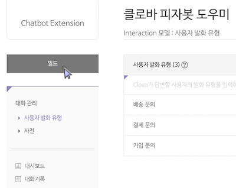
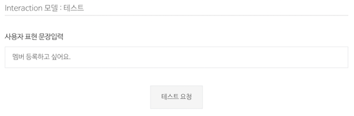
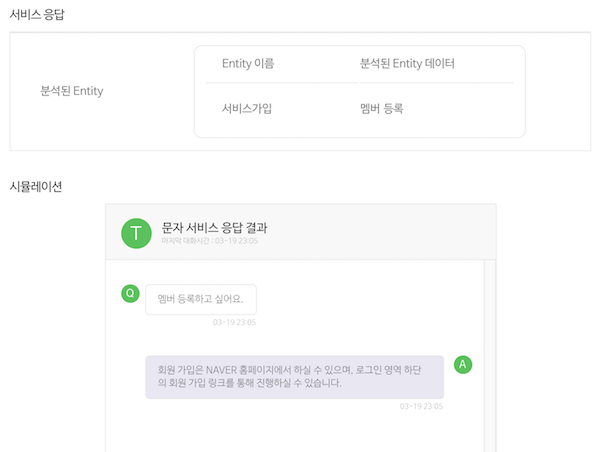
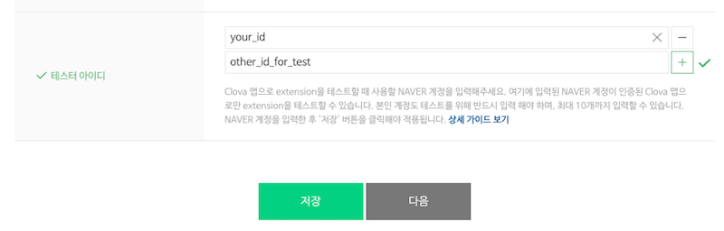

Clova Chatbot 테스트
등록한 Clova Chatbot이나 챗봇 대화를 배포하기 전에 테스트해 볼 수 있습니다. 다음 항목을 수행해 Clova Chatbot과 챗봇 대화를 테스트합니다.
챗봇 대화 학습
챗봇 대화를 만든 다음에는 학습 과정을 거쳐야 새로 작성했거나 업데이트한 내용을 테스트하거나 사용할 수 있습니다.
Clova Chatbot 창에서 학습 버튼을 클릭하면 챗봇 대화의 학습을 시작합니다. 학습 시간은 챗봇 대화의 데이터 양에 따라 달라질 수 있습니다.

Note!
학습 중에 Clova Chatbot 창의 다른 메뉴로 이동하더라도 학습이 취소되지 않습니다. 학습을 시작한 이후에 얼마든지 메뉴 이동 및 내용 편집이 가능합니다.
챗봇 대화 테스트하기
챗봇 대화 학습이 완료되면, 챗봇 대화를 테스트할 수 있습니다. 다음과 같이 질문과 답변을 테스트해 볼 수 있습니다.
- Clova Chatbot 창의 메뉴에서 챗봇 학습하기 > 테스트를 클릭합니다.
- 테스트 화면의 입력란에 테스트할 질문을 입력하고 요청을 클릭합니다.

테스트를 완료하면 다음과 같은 결과를 확인할 수 있습니다.

- 음성 답변: Clova에서 음성으로 전달되는 답변입니다. 재생 버튼을 클릭하면 답변을 음성으로 들을 수 있습니다.
- Text 답변: 톡톡과 LINE에서 문자로 전달되는 답변입니다.
- 분석 결과: 질문 예시에 사전 타입에 등록된 단어의 분석 결과입니다.
- 답변 옵션: 액션이 있는 답변의 분석 결과입니다.
- 다른 답변 보기: 테스트 결과로 제공한 답변 외에 다른 후보 답변입니다.
Clova 앱으로 Clova Chatbot 테스트하기
Clova Chatbot을 실제 클라이언트인 Clova 앱에서 테스트해 볼 수 있습니다. 이를 위해 Extension 기본 정보를 등록하는 페이지의 테스터 아이디에 개발자 본인이나 Clova Chatbot을 테스트할 사람의 네이버 계정을 입력해야 합니다. 계정을 추가한 후 저장 버튼을 클릭하면 입력한 계정이 인증된 Clova 앱에서 개발 중인 Clova Chatbot을 테스트할 수 있습니다. Clova 앱에서 테스트를 중지하려면 입력한 계정 정보를 삭제하면 됩니다.

Note!
테스터 아이디를 등록한 후 조금 기다리면 Clova Chatbot을 테스트해 볼 수 있습니다. 만약 1시간 정도가 지나도 Clova Chatbot을 테스트할 수 없을 경우 포럼이나 제휴 담당자를 통해 문의하시기 바랍니다.